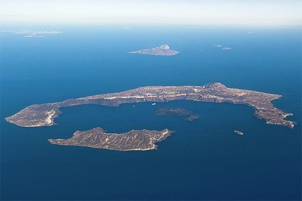
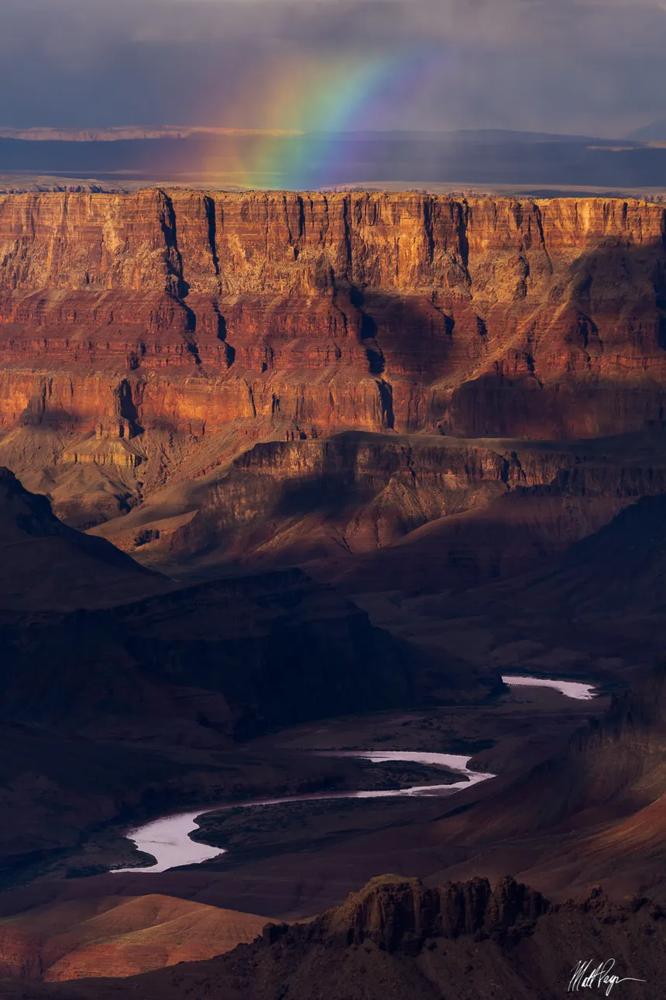
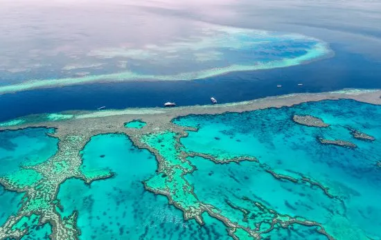
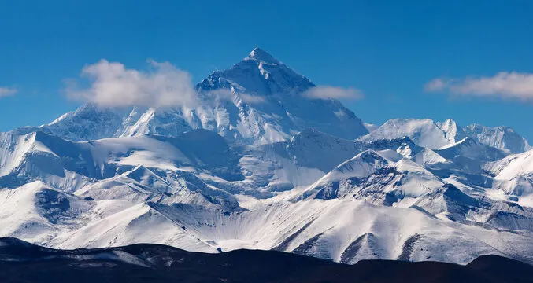
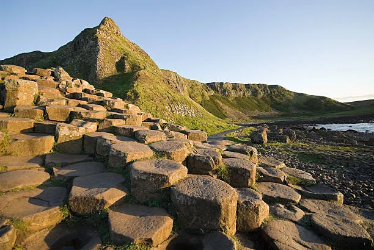
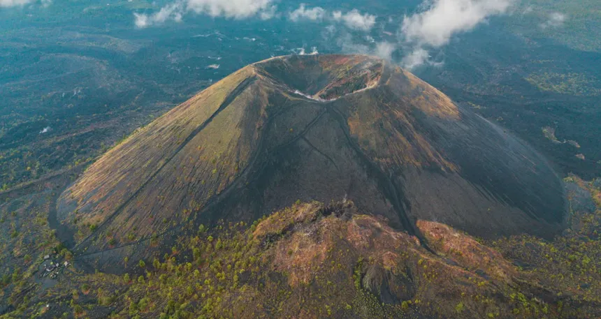
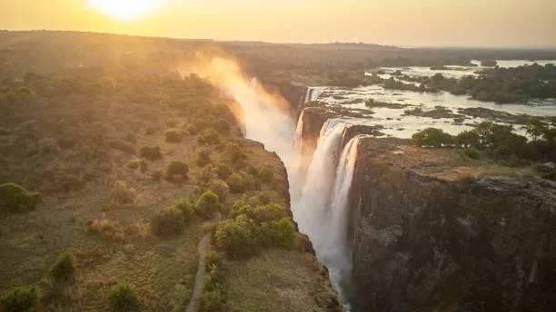
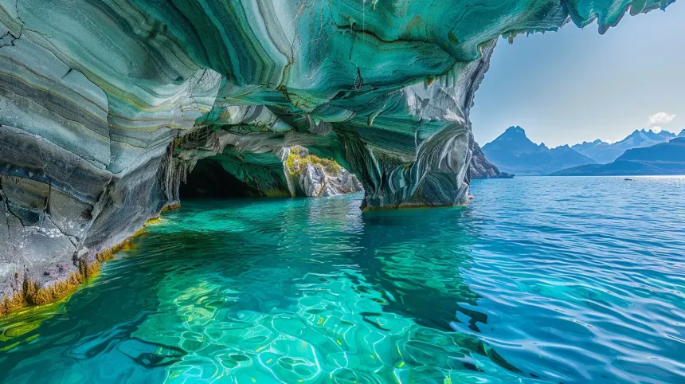
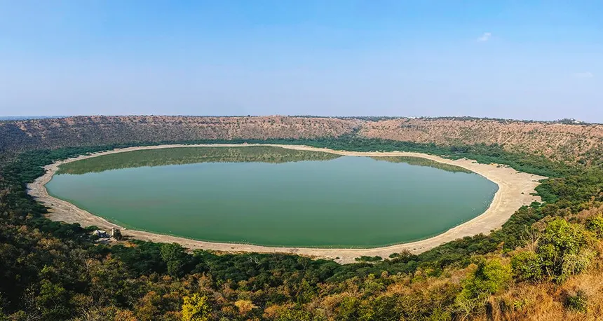

| Wonder | Location | Created By | Description | Similar Wonders |
|---|---|---|---|---|
|
Island of Santorini
 |
Santorini, Greece | Volcanic Eruptions | Repeated volcanic explosions created this softly rested island on the east of the Mediterranean Sea, which last erupted in the 1600s BC. The inner island formed after magma fell back into the earths lower chambers. | Crater Lake (USA), Aeolian Islands (Italy) |
|
Grand Canyon
 |
Arizona, USA | River Erosion | Carved by the Colorado River over millions of years, this massive canyon stretches 277 miles long and up to 18 miles wide. The exposed rock layers reveal nearly 2 billion years of Earth's geological history. | Fish River Canyon (Namibia), Copper Canyon (Mexico) |
|
Great Barrier Reef
 |
Queensland, Australia | Coral Formation | The world's largest coral reef system composed of over 2,900 individual reefs and 900 islands. Built by billions of tiny coral polyps over thousands of years, it spans over 1,400 miles. | Belize Barrier Reef, Red Sea Coral Reef |
|
Mount Everest
 |
Nepal/Tibet Border | Tectonic Plate Collision | Earth's highest mountain at 29,032 feet above sea level, formed by the collision of the Indian and Eurasian tectonic plates. The mountain continues to grow approximately 4mm per year. | K2 (Pakistan), Kangchenjunga (Nepal) |
|
Giant's Causeway
 |
County Antrim, Northern Ireland | Volcanic Basalt Columns | An area of about 40,000 interlocking basalt columns formed by ancient volcanic eruptions. The hexagonal columns were created when molten lava cooled rapidly and contracted, forming this unique geometric pattern. | Devil's Postpile (USA), Fingal's Cave (Scotland) |
|
Paricutin Volcano
 |
Michoacán, Mexico | Volcanic Activity | A cinder cone volcano that was born in a farmer's cornfield in 1943. It grew to 1,391 feet within one year and remained active until 1952, providing scientists a rare opportunity to observe a volcano's birth. | Surtsey (Iceland), Mount Vesuvius (Italy) |
|
Victoria Falls
 |
Zambia/Zimbabwe Border | River Erosion | Known locally as "The Smoke That Thunders," this massive waterfall is over a mile wide and 355 feet high. The Zambezi River plunges over a cliff into a narrow gorge carved through basalt rock. | Niagara Falls (USA/Canada), Iguazu Falls (Argentina/Brazil) |
|
Marble Caves
 |
Patagonia, Chile | Water Erosion | A network of stunning blue-marbled caves carved into calcium carbonate formations over 6,000 years by the waves of General Carrera Lake. The swirling patterns reflect the lake's azure waters. | Apostle Islands Sea Caves (USA), Blue Grotto (Italy) |
|
Lonar Crater Lake
 |
Maharashtra, India | Meteor Impact | Created by a meteorite impact around 50,000 years ago, this is one of only four known hyper-velocity impact craters in basaltic rock on Earth. The saline and alkaline lake has unique microorganisms found nowhere else. | Meteor Crater (USA), Barringer Crater (USA) |